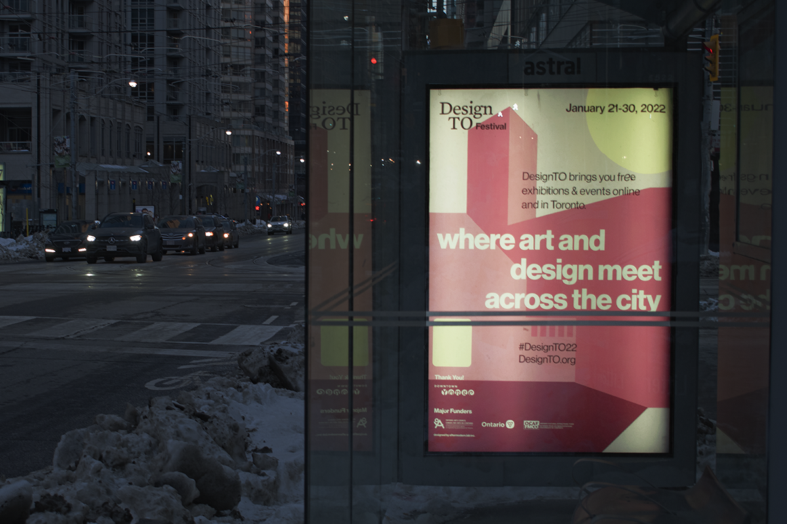
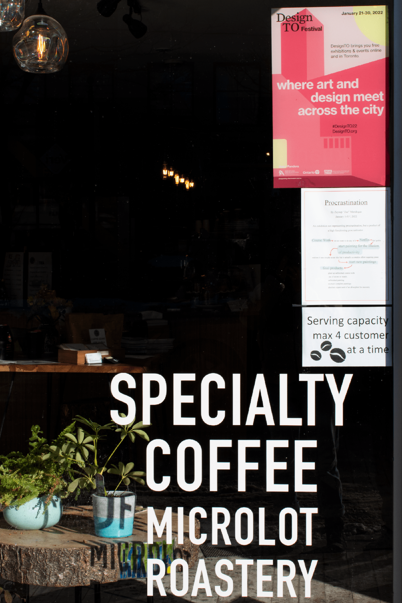
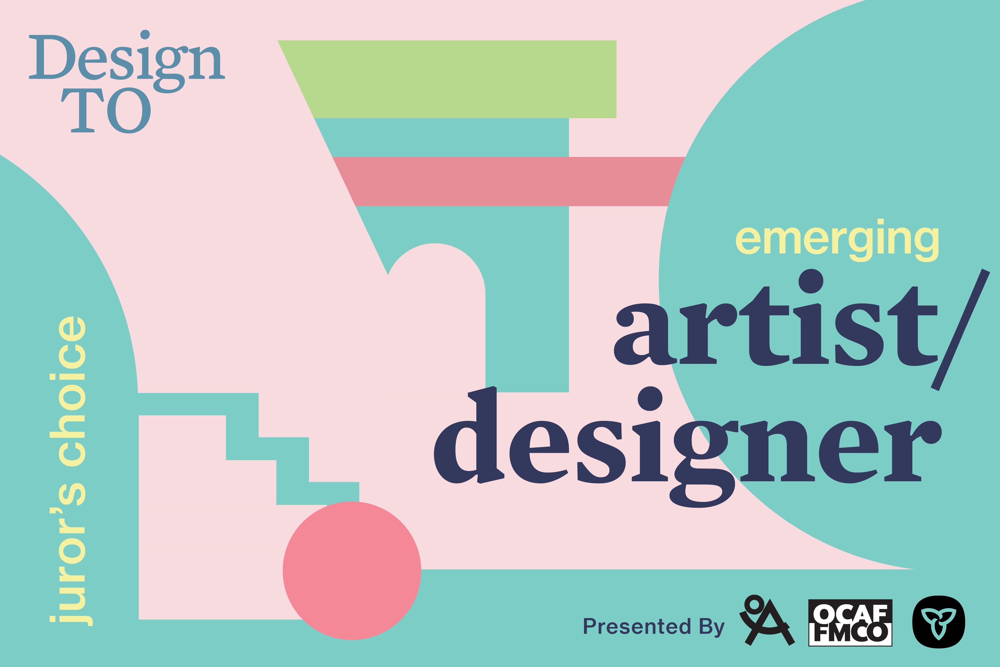
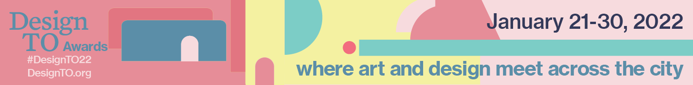
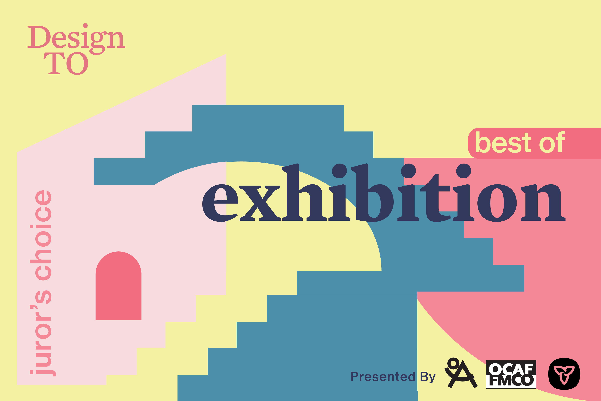

As the current junior designer at aftermodern.lab, I independently developed graphic assets for the Design TO Festival—a non-profit arts organization & event series in Toronto.
...These pieces include a bus shelter light box ad, window ad, web ads, social media gifs, & award placards (a selection shown). I typeset, curated the background illustration, & laid out the various assets as per my design. The given art direction was limited to colour palette & client requirements. Additionally, I ideated, illustrated, & animated the playful visual backdrops according to the loosely art-directed theme of ‘playful space’ for the web ads, award placards, & social media gifs.

social media gif

bus shelter ad — downtown TO (68.25" × 47.25")

social media gif

vinyl window cling (11" x 17")

digital award placard (wall projection)

digital ad (1456px × 180px)

digital award placard (wall projection)
These pieces include a bus shelter light box ad, window ad, web ads, social media gifs, & award placards (a selection shown). I typeset, curated the background illustration, & laid out the various assets as per my design. The given art direction was limited to colour palette & client requirements. Additionally, I ideated, illustrated, & animated the playful visual backdrops according to the loosely art-directed theme of ‘playful space’ for the web ads, award placards, & social media gifs.